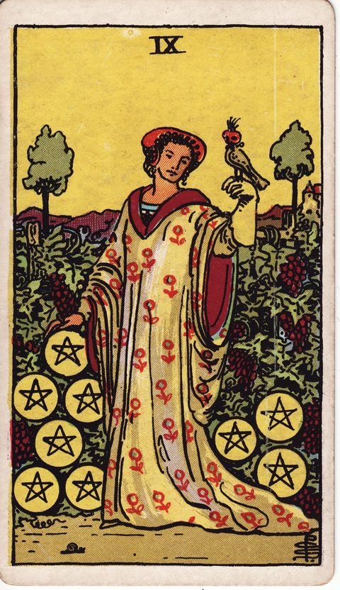

ペンタクルの9の意味
Nine of Pentacles

- 分類ペンタクル
- 象徴地／ペンタクル（仕事・お金・現実）／数字9（自立・豊かさ）
- 正位置自立・豊かさ・洗練
- 逆位置依存・見栄・孤独な豊かさ
ペンタクルの物語（仕事と現実） 第9章「成熟・完成の手前」
描かれている象徴
ブドウが実る庭園で、豪華なドレスの女性が手に鷹を乗せて立っています。足元にはカタツムリ。自分の努力で築いた豊かさと自立、洗練された暮らしを表す札です。
正位置の意味
- 自立
- 豊かさ
- 洗練
自分の力で築いた成果を、落ち着いて味わえる時期です。
進めやすさ：5 / 5（追い風が強い）
- 見落としていること
- すでに築いた豊かさや実績を、自分で認めていますか。
- 進むときの注意点
- 豊かさを維持するため、無理な見栄や浪費は控えましょう。
- 本音（本当はどうしたい？）
- 誰の助けもなく、自分らしく暮らせる形はどんなものですか。
- 手放してよいこと
- 「もっと稼がなければ安心できない」という不安を、少し手放してみて。
- 決め手になる違い
- 自分の力で無理なく続けられる方に、軍配が上がりそうです。
逆位置の意味
- 依存
- 見栄
- 孤独な豊かさ
豊かでも満たされない、または他者に依存している状態です。
進めやすさ：3 / 5（条件しだい）
- 見落としていること
- 豊かに見えて、心のつながりが薄くなっていないか。
- 進むときの注意点
- 見栄のための消費が、実際の安定を損ねていないか。
- 本音（本当はどうしたい？）
- 物質的な豊かさの先に、何を求めていますか。
- 手放してよいこと
- 「一人で完璧にこなさなければ」という縛りは、分け合ってもいいのです。
- 決め手になる違い
- お金だけでなく、心の満足感もあるかどうかが分かれ目です。
決断・迷いにおけるヒント
決断の場面での読み方
ペンタクルの9の女性は、ブドウの実る庭園で手に鷹を乗せて立っています。自分の努力で築いた豊かさと自立、そして洗練された暮らしを表すカードです。決断の場面では、誰かに依存せず、自分の力で選んだ道かどうかを確かめてください。足元のカタツムリは、ゆっくりでも着実に進んできた歩みの象徴です。これまでの積み重ねを信じ、自分にふさわしい豊かさを受け取る選択をしてよいのだと教えてくれます。
よくある迷いとの向き合い方
一人暮らしや独立、自分へのご褒美など、自立に関わる迷いに心強いカードです。逆位置なら、見栄や他人の評価のために選んでいないか、豊かさの中で孤独を感じていないか確認を。誰と喜びを分かち合いたいかも考えると、選択に深みが出ます。
決断前に自分に問いかけたいこと
誰かに依存せず、自分の力で選んだ道か。これまでの積み重ねを信じられているか。見栄や他人の評価のために選んでいないか。手にした豊かさを、誰と分かち合いたいか。
「進めやすさ」は、その選択肢を「いま進める」ときの追い風の強さ。運勢の良し悪しではない。